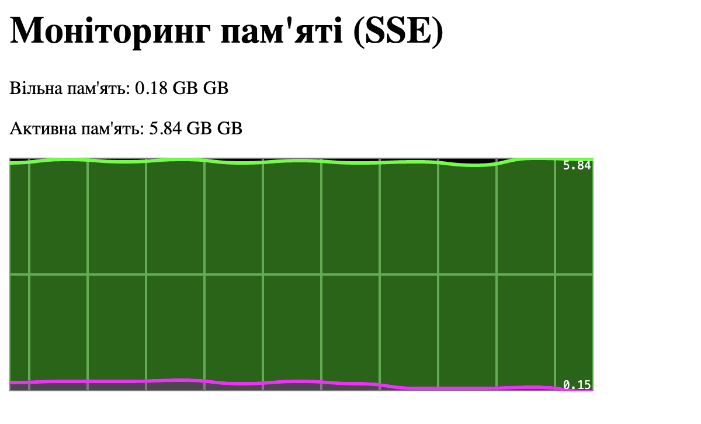

Про проєкт
Невеликий застосунок для моніторингу оперативної пам’яті macOS у реальному часі. Дані про вільну та активну пам’ять отримуються через нативний C++ модуль і передаються у браузер через SSE.
На frontend дані обробляються через EventSource, відображаються у числовому вигляді та додаються на live-графік через SmoothieChart.
Що реалізовано
- Збір memory statistics через macOS Mach API
- Нативний Node.js addon на C++ через N-API
- Передача метрик через Server-Sent Events
- Оновлення даних без перезавантаження сторінки
- Візуалізація метрик через SmoothieChart
- Обробка втрати SSE-з’єднання
Technologies